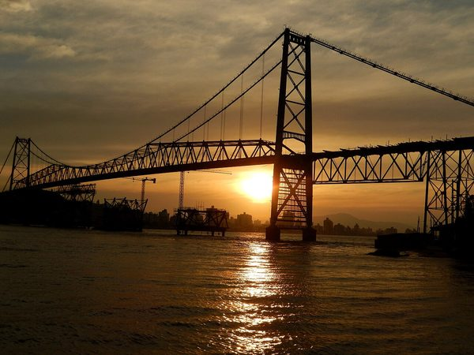

Região selecionada
Litoral e Grande Florianópolis
Faixa costeira de clima mais ameno, herança açoriana, praias urbanas e a capital do estado. Concentra turismo, serviços e tecnologia.
- Verão / inverno
- 28 °C / 16 °C
- Economia
- Turismo e tecnologia
- Herança
- Açoriana
Principais cidades
- Florianópolis
- Balneário Camboriú
- São José
- Itajaí
- Bombinhas
- Garopaba
Você sabia? Só na Ilha de Santa Catarina são mais de 40 praias — e o estado passa das 500 no total.
Ver os perfis das cidades desta região